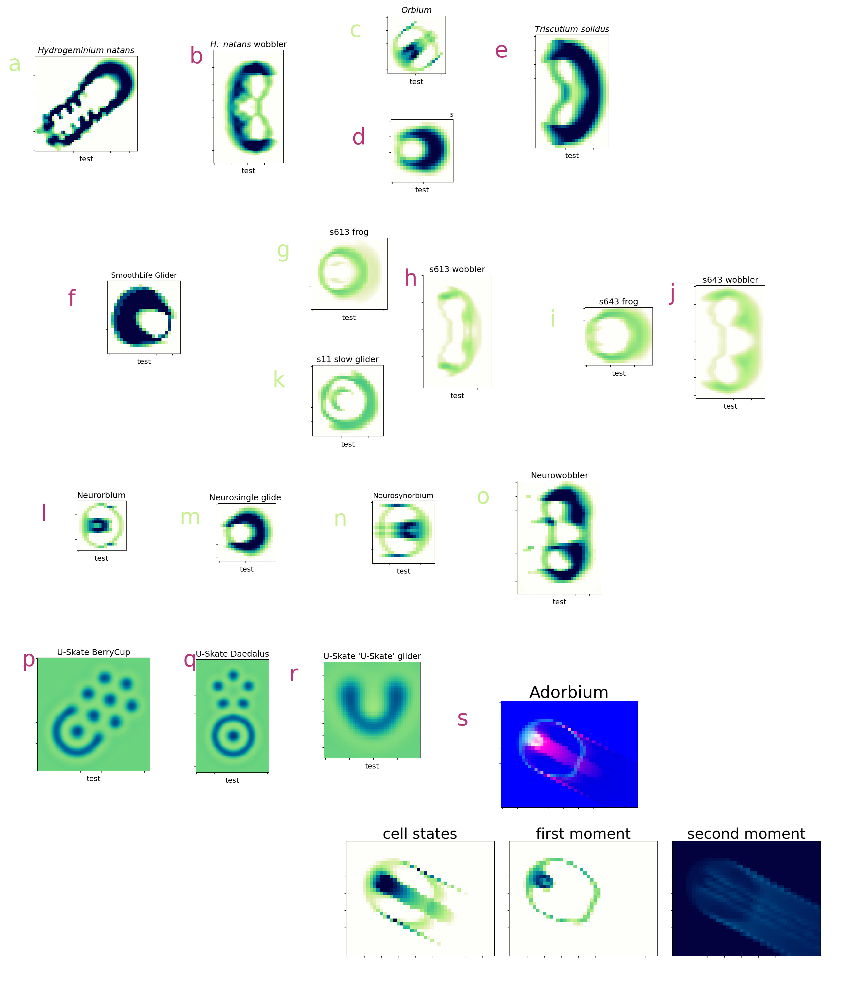

Non-Platonism is not a special case

A collage of gliders from different CA-like systems. Red letters indicate non-Platonic behavior. a through e: standard Lenia; f: SmoothLife; g through j: glaberish; l through o: neural cellular automata; p, q, r: U-Skate World in the Gray-Scott reaction diffusion system; s: Adorbium (a continuous CA with an adaptive moment, or adam, update).
- Figure from: Q. T. Davis, " Discretization-Dependent Dissolution of Gliders in (Dis)Continuous Systems: Non-Platonic Self-Organization in Complex Systems", Innovations in Machine Intelligence (IMI), vol.3, pp. 1-23, 2023. DOI: 10.54854/imi2023.01 at https://www.imijournal.org